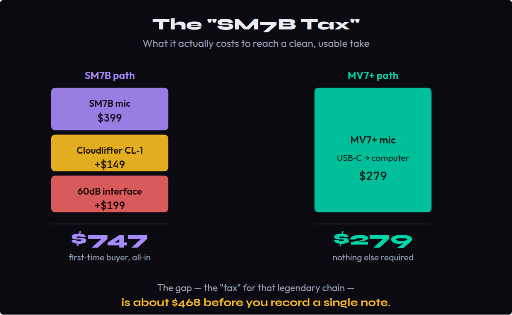
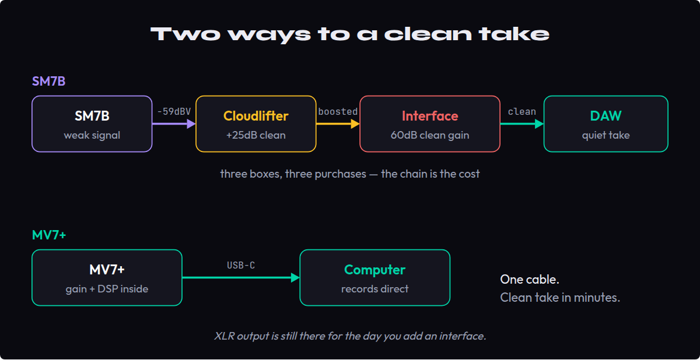
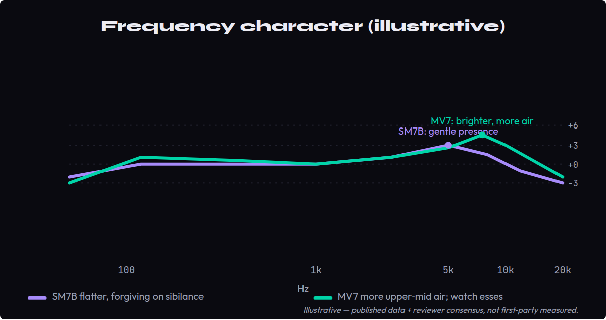
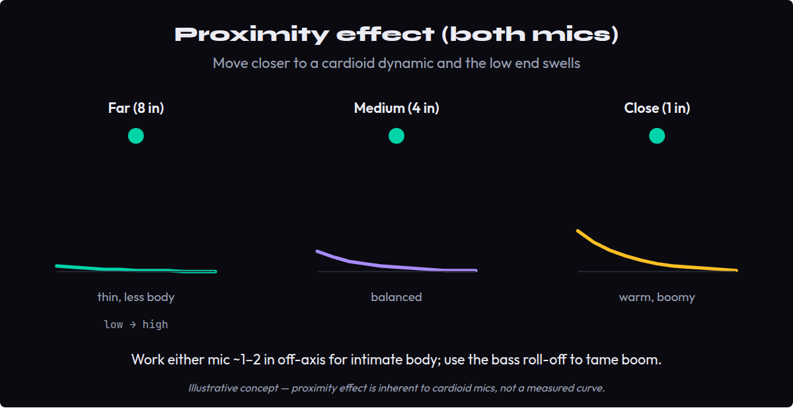
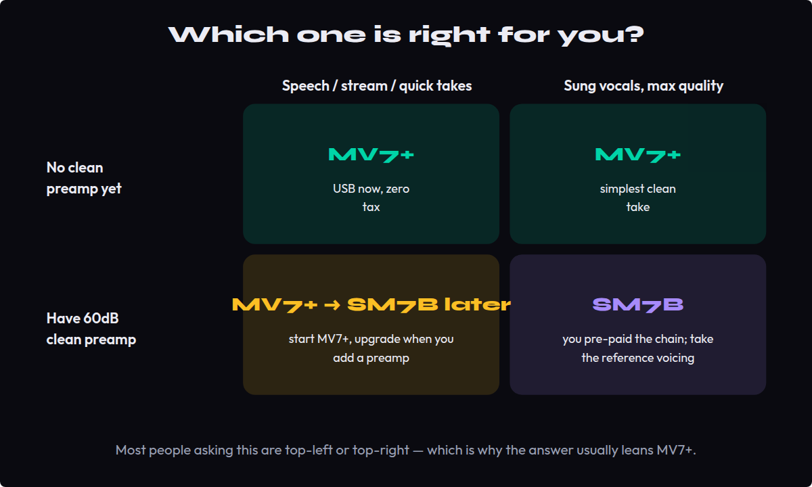

If you are recording music in an untreated room and want a clean, professional take without a pile of extra gear, buy the Shure MV7+ (~$279) — it runs straight over USB-C, needs no Cloudlifter, and keeps an XLR output for when you grow. Buy the Shure SM7B (~$399) only if you already own (or will buy) an interface with 60 dB of clean gain, and you specifically want its flatter, reference broadcast voicing for sung vocals. The SM7B's true cost is never just the mic — that is the catch this comparison is really about.
This article contains affiliate links. If you purchase through our links we may earn a commission at no extra cost to you. It does not affect our editorial independence — every recommendation is based on genuine assessment.
- ✅ USB-C and XLR — usable take in minutes, no interface required
- ✅ No Cloudlifter, no gain hunt: ~$279 all-in versus the SM7B's hidden chain
- ✅ Onboard DSP, digital pop filter, auto-level, real-time denoise
- ❌ Brighter, more sibilance-prone voicing than the SM7B on sung vocals
- ❌ Lower resale and less "reference" prestige than the icon
- ✅ The reference broadcast dynamic — flatter, warmer, forgiving on esses
- ✅ Outstanding room rejection in untreated spaces
- ✅ Bombproof build and strong resale value
- ❌ Needs ~60 dB of clean gain — a Cloudlifter ($149) or a capable interface
- ❌ Real first-time cost is closer to $550–$750 than $399
There is no single winner here — it depends on what you already own. For the home producer starting from a budget interface, the MV7+ scores 8.9 because it removes the cost and complexity barrier. For someone who already runs a 60 dB-clean preamp, the SM7B climbs to 9.0+ and earns its place. The scorecard below breaks down who wins each axis.
Prices are correct as of June 2026 (SM7B ~$399, MV7+ ~$279, Cloudlifter CL-1 ~$149). Check the manufacturer for current pricing.
Search "MV7 vs SM7B" and almost every result answers the same question: which is the better podcast microphone? That framing quietly assumes you are talking into a mic for spoken word. But most people weighing these two are doing something the podcast guides never address — recording music in a bedroom, tracking their own vocals, maybe a guitar, into a DAW. The real question for that person is not "which sounds more professional on a podcast." It is: does the SM7B's legendary reputation justify what it actually costs to make it sound legendary?
Because the SM7B's price tag lies to you. The $399 you see is the entry fee, not the bill. This comparison is built around that gap — what we call the SM7B Tax — and around the one place the two mics genuinely diverge once you do pay it.
The SM7B Tax: What the "Studio Standard" Actually Costs
The SM7B is a passive dynamic microphone with an output sensitivity of about −59 dBV/Pa — an exceptionally quiet signal. To bring it up to a usable recording level it needs roughly 60 dB of clean gain. Most budget audio interfaces deliver 40–55 dB, and the last few decibels of any preamp are its noisiest. Push a cheap interface to its ceiling for the SM7B and you get a steady hiss under everything you record.
The standard fix is a Cloudlifter CL-1 (~$149), an inline booster that adds about +25 dB of clean gain. So the honest shopping list to get "that SM7B sound" cleanly is the mic, the booster, and an interface that can actually feed it. Here is what that stacks up to next to simply buying an MV7+.

The cost to reach a clean, professional take — mic, booster, and a capable interface versus the MV7+ straight over USB. Drop the $199 interface if you already own one with 60dB of clean gain.
Even being generous — assume you already own a decent interface and only add the Cloudlifter — the SM7B path is still around $548 against the MV7+'s $279. The MV7+ is the interface and the booster, built in. That is not a knock on the SM7B; it is simply the part of the decision the spec sheets leave out. As one 2026 teardown of the two put it, you cannot use an SM7B straight out of the box and expect the classic sound — the MV7+ requires no additional hardware and is ready to record immediately.
It is worth being precise about what "an interface that can feed it" means, because this is where buyers get surprised. A clean 60 dB is not the same as a maximum 60 dB — you want that gain available with headroom to spare, not at the dial's last notch where the preamp starts to hiss. In practice that points to interfaces like the SSL 2 (~$229), the Universal Audio Volt 2 (~$199), or a step up; the popular Focusrite Scarlett 2i2 Gen 4 (~$199, ~57 dB) is borderline and leans on a Cloudlifter to feel comfortable. Sub-$120 interfaces simply do not belong in an SM7B chain.
There are two other ways to pay the tax, and both are worth knowing. Shure's own MVX2U (~$129) is an XLR-to-USB adapter with 60 dB of clean gain and onboard DSP — pair it with an SM7B and you have a tidy USB rig, though now you are near $528 and have rebuilt much of what the MV7+ already does in one box. Or you skip the booster entirely with the SM7dB (~$499), an SM7B with the preamp built into the body. Both are sensible options; both quietly confirm the point. And none of these figures include the boom arm and shock mount most people add — another $40–$120 on either microphone.
To make the gap concrete, picture the most common path. A first-time buyer reads "the studio standard, $399," buys only the SM7B, and plugs it into the interface they already own. They push the gain to maximum for a usable level, and underneath the voice sits a steady hiss. An evening of searching later, they learn the fix is a $149 Cloudlifter or a pricier interface — a second purchase they never budgeted for. The MV7+ buyer, meanwhile, recorded a clean take that same evening and never met the problem at all. Same headline money, a very different first night. That lived gap — not a spec-sheet column — is the entire reason this comparison exists, and it is why "which is cheaper" is the wrong question. The right one is "which is cheaper to a finished take."
The Gain Problem: Why the SM7B Punishes Cheap Interfaces
This is the mechanism behind the tax, and it is worth understanding rather than taking on faith. Sensitivity is how much signal a mic produces for a given sound pressure. The SM7B's −59 dBV/Pa is among the lowest of any common studio mic, which is exactly why it rejects room noise so well — but it also means the burden of amplification falls entirely on whatever comes next.

The SM7B needs a Cloudlifter and a 60dB-clean interface before it records cleanly; the MV7+ has the gain and conversion built in and runs straight over USB-C.
The MV7 sits in a completely different place. Its capsule and internal electronics produce a far hotter signal, so any normal interface drives it comfortably in XLR mode — and over USB it bypasses the question entirely, because Shure's own converter and preamp are inside the mic. The SM7B can absolutely sound cleaner and more open than the MV7 once it is fed properly; the catch is that "properly" is where the money goes. If you want to go deeper on the underlying ideas, see our Bible entries on gain, noise floor, and the full signal chain.
The phrase to internalize is signal-to-noise. Every preamp generates a little noise of its own; the quieter your source arrives, the more you must amplify, and the more of that preamp noise you amplify along with the voice. The SM7B starts the race far back, so a weak preamp drags its own hiss up into audibility. A Cloudlifter helps because it adds its gain before the interface, letting the interface run relaxed and quiet. This is also why the SM7B's greatest weakness and its greatest strength are the same trait: that low sensitivity is exactly what makes it ignore room reflections, keyboard clatter, and the refrigerator down the hall.
What does the failure mode actually sound like? Not distortion — a soft, constant wash of hiss that sits under everything and becomes obvious the instant the voice stops. On a podcast you might tolerate it; on a quiet verse or an exposed acoustic passage it is the difference between a demo and a release. The MV7's hotter output sidesteps the whole problem, and over USB Shure's converter and, on the MV7+, active denoising keep the floor low without you thinking about it.
Voicing: Where They Diverge on Sung Vocals (Not Just Speech)
Once the SM7B is fed cleanly, how different do they actually sound? On spoken word, less than the internet implies — both are warm cardioid dynamics with the same family resemblance. On sung vocals, where podcast reviews stop paying attention, the differences start to matter.

Both are warm dynamics, but the MV7 carries more upper-mid air (and more sibilance to ride) while the SM7B stays flatter and more forgiving. Illustrative, sourced — not first-party measured.
The SM7B is the flatter, more neutral of the two. Its gentle presence lift sits a little lower and rolls off smoothly up top, which makes it forgiving on harsh consonants and easy to mix — a big reason it has anchored sung-vocal chains for decades. The MV7 carries a touch more body in the low mids and noticeably more air and bite in the upper mids. That can read as flattering and "finished" on a podcast voice, but on a bright or sibilant singer it asks for more de-essing and careful placement. Neither is wrong; they are different tools. If your material is mostly sung vocals and you want the safest, most reference-like starting point, that is the SM7B's lane.
The character curve above is illustrative — drawn from Shure's published response data and the consensus of side-by-side reviews, not from first-party measurement in our room. We have not lab-tested these two mics ourselves, and we say so rather than imply a test we did not run.
Two physical behaviors matter beyond the frequency curve. The first is proximity effect: like all cardioid dynamics, both mics gain low-end weight as you move closer, and both are usually worked an inch or two off the grille for that intimate, in-the-room body. The SM7B's bass roll-off switch tames this gracefully; the MV7 does similar work in software. The second is off-axis response — how the mic colors sound arriving from the sides. The SM7B's is famously smooth, part of why it forgives imperfect mic technique. The MV7 is good but a touch less even off-axis, so it rewards staying on the capsule.

Move closer to either cardioid dynamic and the low end swells; work ~1–2 inches off-axis for intimate body and use the bass roll-off to tame boom. Illustrative concept.
For a singer, the practical difference is maintenance. The SM7B tends to need less corrective EQ and de-essing to sit in a mix; you aim it and it behaves. The MV7's extra upper-mid energy can sound immediately flattering — many people prefer it solo'd — but in a dense arrangement that same energy competes with cymbals, acoustic guitars, and synths, and you will likely reach for a de-esser and a gentle high-shelf cut. Neither is more "professional"; the SM7B is simply the lower-effort path to a balanced sung vocal, which is exactly what the tax buys. If your work is mostly rap, spoken word, or streaming, the MV7's brighter voicing is arguably the more enjoyable starting point.
The MV7's Trump Card: USB, XLR, and Onboard DSP
The MV7 line was built to remove the exact friction the SM7B creates. The current MV7+ (~$279) carries a USB-C output and a standard XLR output, so it plugs straight into a laptop today and into an interface the day you buy one — there is no throwaway purchase. Over USB it adds genuinely useful processing: an auto-level mode that rides your gain, a digital pop filter, real-time denoising, onboard EQ and compression through Shure's MOTIV software, and an LED touch panel. The original MV7 (~$249, now largely superseded) does the core job nearly identically if you find it cheaper.
For a producer recording their own vocals, this is the difference between a clean take in five minutes and an afternoon of researching Cloudlifters and gain charts. It is also why the MV7+ is the more futureproof buy at this price: it grows from "USB mic on a laptop" to "XLR dynamic on an interface" without you re-buying anything.
The onboard DSP deserves an honest accounting, because it is the MV7+'s real differentiator and it is a mixed bag in the best way. Auto-level mode rides your gain so a take stays usable even when you drift off-axis or get loud — genuinely handy for solo creators, less so if you want full manual control for music. The real-time denoiser is effective on steady background noise but, like every denoiser, can soften transients if pushed, so keep it light for sung vocals. The digital pop filter and the onboard EQ and compression in Shure's MOTIV app mean a beginner can build a broadcast-ready chain without owning a single plugin.
The two-output design is the quiet masterstroke. Today you run USB-C into a laptop with zero extra gear; the day you buy an interface, you move the same mic to XLR and step into the analog chain — no throwaway purchase, no regret. That is a fundamentally different proposition from the SM7B, which assumes you have already committed to the interface world. For anyone whose setup is going to grow, the MV7+ is the lower-risk bet at this price. Shure also sells the MV7i, which adds a built-in interface input if you want to record a second XLR source into the same USB stream.
Full Specs and Feature Comparison
| Spec | Shure MV7+ | Shure SM7B |
|---|---|---|
| Type | Dynamic, cardioid | Dynamic, cardioid |
| Connectivity | USB-C + XLR | XLR only |
| Needs external gain? | No (USB) / minimal (XLR) | Yes — ~60 dB clean |
| Onboard DSP | Yes (auto-level, denoise, EQ) | None |
| Phantom power | Not required | Not required (passive) |
| Frequency response | ~50 Hz–16 kHz | 50 Hz–20 kHz |
| Best-case price to record | ~$279 all-in | ~$548–$747 |
| Voicing | Brighter, more "finished" | Flatter, reference, forgiving |
Build, Handling, and the Untreated Room
Both microphones are cardioid dynamics, and that single fact is why either is the right family of mic for an untreated bedroom. A dynamic capsule is far less sensitive than a condenser, so it hears your voice and largely ignores the hard walls, the desk reflections, and the hum of the room — the reason these two keep beating pricier condensers for home vocals. If you are still choosing between mic types, our condenser vs dynamic guide covers the trade-off in full, and the polar pattern entry explains the cardioid pickup doing the rejecting.
On build, the SM7B is the tank: a heavy, all-metal body with an integrated yoke mount and a reputation for surviving decades of studio abuse — a real part of why it holds resale value. The MV7 line is lighter and more plastic-forward but well made, and the MV7+ feels sturdier than its price suggests. Both mount on a standard boom arm, and both genuinely need one, because hand and desk noise travel easily into any dynamic.
Handling technique closes much of the sonic gap. Work either mic close and slightly off-axis, add a pop filter (or lean on the MV7+'s digital one), and put it on a shock mount or arm rather than the desk. Do that and the untreated room stops being the limiting factor — at which point the decision really does come back to cost, connectivity, and the voicing you prefer.
The Scorecard: Who Wins Each Axis
Scores are calibrated per axis, not rounded — small gaps reflect real, defendable differences. The overall is deliberately situational: there is no honest single winner when the right answer depends on the gear you already own.
| Axis | MV7+ | SM7B | Winner |
|---|---|---|---|
| Sound, sung vocals | 8.6 | 9.1 | SM7B |
| Setup / gain simplicity | 9.4 | 6.8 | MV7+ |
| Total cost to a usable take | 9.2 | 7.3 | MV7+ |
| Connectivity / flexibility | 9.5 | 7.0 | MV7+ |
| Untreated-room friendliness | 8.7 | 9.0 | SM7B |
| Build / longevity / resale | 8.4 | 9.3 | SM7B |
| Overall (situational) | 8.9 | 8.6 | It depends |
Who Should Buy Which

Match the mic to your gear and your material: the MV7+ wins three of four quadrants; the SM7B is the pick once you already run a clean 60dB preamp and want the reference voicing.
The bedroom producer recording their own vocals. You are tracking into a laptop or a modest interface, the room is untreated, and you would rather spend on music than on a gain chain. The MV7+ is built for exactly this: plug in over USB, let auto-level catch your mistakes, and you have a clean, mixable take today — with the XLR output waiting for the day you upgrade. This is the single most common person asking "MV7 or SM7B," and for them it is not close.
The upgrader who already owns a real preamp. If an SSL 2, a Volt, or a comparable 60 dB-clean interface is already on your desk, the math flips. You have pre-paid the tax, and the SM7B rewards it with the flatter reference voicing and the stronger resale. Here the SM7B is the connoisseur's pick, and the MV7's onboard features are largely redundant with the chain you already run.
The hybrid creator — music and streaming both. You record vocals some nights and go live on others, and you want one mic that does both without a second purchase. The MV7+ wins again on flexibility: USB for the stream, XLR for the session, onboard processing for the days you do not want to open a DAW. The SM7B can do this too, but only after you have built the chain around it.
The Verdict
The MV7+ wins this comparison for the person most likely to be asking: a producer recording music at home who does not already own a serious preamp. It delivers ~90% of the SM7B's character with none of the hidden cost, plugs in two ways, and processes itself into a usable take immediately. That is why it takes the situational overall at 8.9.
The SM7B is not beaten so much as conditional. Give it the 60 dB of clean gain it demands and it remains the flatter, more reference-grade dynamic for sung vocals, with better room rejection and resale — a genuine 9.0+ in the right chain. The mistake is buying it as a $399 mic and discovering the rest of the bill afterward. Decide whether you are paying the tax on purpose. If you are, the SM7B rewards it. If you would rather not, the MV7+ was built for exactly that.
One honest caveat in the SM7B's favor: resale and longevity. A used SM7B sells quickly and near its price, while the MV7 line depreciates faster as USB models are superseded. If you are the kind of buyer who upgrades and re-sells, the SM7B's higher entry cost is partly refundable in a way the MV7's is not — a small thumb on the scale for anyone treating the mic as a long-term asset rather than a tool to start tonight.
Starting from scratch and recording music → MV7+. Already own a clean 60 dB preamp and want the reference voicing → SM7B. Read the MV7 review and SM7B review for the deep dives, and best audio interfaces under $200 if you are building the chain.
Before You Buy: 3 Checks
Run these before you spend a cent. Each takes a few minutes and tells you whether the SM7B’s “tax” is real for your setup — or whether the MV7+ already has you covered.
- Plug any dynamic mic into your current interface and speak at a normal distance.
- Raise the gain until your DAW meter peaks around −18 dBFS.
- If you are past ~75% of the dial, your interface is near its ceiling — the exact spot where an SM7B would hiss and where a Cloudlifter (or the MV7+’s built-in gain) earns its keep.
- Record the same 20-second sung phrase on two mics you can borrow — one flat dynamic, one brighter.
- Match levels, then solo the 6–9 kHz band with an EQ.
- That upper-mid region is where the MV7 and SM7B diverge most — hearing it on your own voice tells you which character flatters you before you spend a cent.
- Record 30 seconds of silence and check the noise floor in your DAW — a noisy room or a maxed preamp is where the SM7B punishes you.
- Total the SM7B path for your rig: the mic, plus a booster only if the beginner test showed your interface near its ceiling, plus an interface only if you still need one.
- Compare that total against the MV7+ at $279. If the gap is large and your room is noisy, the “tax” is real for you; if you already run a clean 60 dB preamp in a treated space, the SM7B’s voicing may be worth paying for.